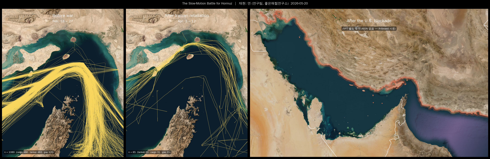
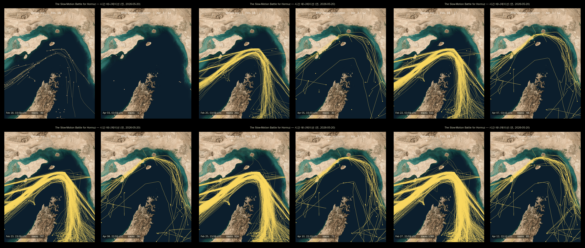
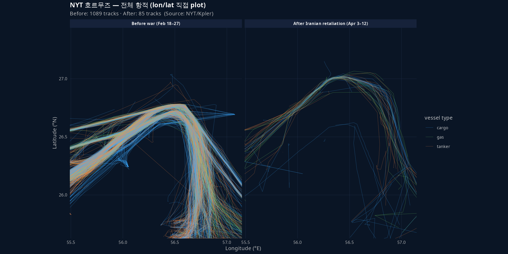

연구 ▷ 호르무즈 ▷ NYT 항적 figure 재현
0. 한 줄 요약
NYT 2026-04-16 기사 “How the Iran War, Then the U.S. Blockade, Has Changed the Strait of Hormuz” 의 hero 3-panel 항적 figure 를, NYT 가 실제로 쓴 raw 좌표 데이터 로부터 Python 으로 직접 다시 그려본 기록.
1. 발단 — 좋은해협연구소의 첫 작업
좋은해협연구소는 본 논문이 없는 신생 프로젝트. 첫 자료가 NYT 의 위 기사 한 장이었다. “도서관 가서 기사를 꼼꼼히 읽어봐”가 첫 지시였고, 거기서 자연스럽게 figure 재현 이 첫 작업으로 정해졌다.
연구 노선 분기:
- A — 공개·무료 데이터만으로 (Kpler 라이선스 X)
- B — NYT 측 데이터가 article HTML/JS 어딘가에 임베드되어 있는지 까보기
두 노선을 같이 갔는데, 결과적으로 B에서 잭팟이 터졌다.
2. 데이터 발굴 — chunk JS 까기
기사 HTML 안에는 raw 데이터가 없었다. 단 figure 들은 NYT 의 그래픽 CDN (static01.nytimes.com/newsgraphics/RuEuIw0xIss9kg/...) 에 SvelteKit 빌드로 호스팅되어 있었다. 그 빌드의 chunk JS 파일 16개를 모두 curl 로 받아 정규식으로 좌표 패턴을 grep:
grep -ohE '\b2[5-7]\.[0-9]{4,}\b|\b5[5-8]\.[0-9]{4,}\b' chunks/*.jsBuJavWVE.js (212KB) 안에서 호르무즈 위경도 범위의 숫자들이 다량 발견되었고, 동시에 fetch(i + "index.json") 호출도 잡혔다. 변수 i 를 trace 한 결과 NYT 의 unrelated locator-map 서비스 URL 이었다 (오답).
진짜 답은 _assets 경로의 동일 chunk 안에서 발견됐다:
_assets.mFrTYJL3K3oVVd4qilR13gN3N0OZPatBL5au9cDHCdc/hormuz-tracks-before.json
_assets.mFrTYJL3K3oVVd4qilR13gN3N0OZPatBL5au9cDHCdc/hormuz-tracks-after.json
_assets.mFrTYJL3K3oVVd4qilR13gN3N0OZPatBL5au9cDHCdc/hormuz-map-static.json각 파일 내용:
| 파일 | 크기 | 트랙 수 | 기간 |
|---|---|---|---|
hormuz-tracks-before.json |
543KB | 1089 trajectories (cargo 486, tanker 483, gas 120) | Feb 18 – 27 |
hormuz-tracks-after.json |
27KB | 85 trajectories (cargo 31, tanker 33, gas 21) | Apr 3 – 12 |
hormuz-map-static.json |
58KB | borders·labels·gateLine·landMask | 정적 |
기사가 narrative 로 강조한 “1일 130척 → 한 줌으로 폭락” 이 데이터 측에서 1089 → 85 로 비춰진다.
- NYT graphics 빌드는 모두
static01.nytimes.com/newsgraphics/<8자hash>/_app...../immutable/chunks/*.js양식 nodeJS stub 들은 보통 200B 안팎 (그냥 import 만 함). 데이터는 큰 chunk 안에 있다.- 정규식 grep 으로 위경도 패턴 (예:
\b56\.\d{4,}\b) 의 count 가 100+ 이면 그 chunk 에 좌표 임베드 강력 의심. fetch("....json")가 chunk 안에 있으면 그 URL 을 그대로 따라가면 됨. 우리 경우엔 fetch 함수 인자가 변수라 unrelated 였지만,_assets경로를 동일 chunk 안에서 직접 발견하는 행운.
3. 좌표 시스템 해독
JSON 의 tracks[i].pts[j] 가 [x, y, t] 인데 x/y 가 raw lat/lon 이 아니고 정규화되어 있었다.
sample pts: [-0.1255, 1.1949, 259355]
[ 0.5035, 0.4730, 863542]
x range: [-0.30, 1.30]
y range: [ 0.27, 1.27]hormuz-map-static.json 의 label 위치 ({"name":"IRAN","x":0.15,"y":0.1462} 등) 와 bbox aspect=1.2244 를 단서로 다음 변환을 유추:
호르무즈 영역에서 위도 1도와 경도 1도의 실제 길이는 다르다 (\(\cos(\text{lat})\) 보정).
\[ \text{aspect} \;=\; \frac{\text{lat range}}{\text{lon range} \cdot \cos(\text{lat center})} \;=\; \frac{1.8118}{1.6541 \cdot 0.8949} \;=\; 1.224 \]
NYT 의 캔버스는 가로 1 단위에 세로 1.224 단위가 배정되어 있어 픽셀이 실제 거리에 비례한다 (equirectangular at center).
따라서 정규화 좌표 → 픽셀 변환은:
\[ x_{\text{px}} = x_{\text{norm}} \cdot W,\qquad y_{\text{px}} = \frac{y_{\text{norm}}}{\text{aspect}} \cdot H \]
여기서 origin 은 top-left, y 는 아래로 증가한다.
3.2 데이터 로딩 + 좌표 변환 (Python · R)
import json
import numpy as np
data = json.load(open("data/NYT_hormuz/hormuz-tracks-before.json"))
bbox, asp = data["bbox"], data["aspect"]
def to_lonlat(xy):
x, y = xy[..., 0], xy[..., 1]
lon = bbox["minLon"] + x * (bbox["maxLon"] - bbox["minLon"])
lat = bbox["maxLat"] - (y / asp) * (bbox["maxLat"] - bbox["minLat"])
return np.stack([lon, lat], axis=-1)
def to_px(xy, W, H):
x, y = xy[..., 0], xy[..., 1]
return np.stack([x * W, y / asp * H], axis=-1)library(jsonlite); library(data.table)
d <- fromJSON("data/NYT_hormuz/hormuz-tracks-before.json", simplifyVector = FALSE)
bbox <- lapply(d$bbox, as.numeric); asp <- as.numeric(d$aspect)
# 1 track → data.table with lon/lat
track_to_dt <- function(tr) {
pts <- do.call(rbind, lapply(tr$pts, function(p) as.numeric(unlist(p))))
data.table(
x = pts[, 1], y = pts[, 2], t_sec = pts[, 3],
lon = bbox$minLon + pts[, 1] * (bbox$maxLon - bbox$minLon),
lat = bbox$maxLat - pts[, 2] / asp * (bbox$maxLat - bbox$minLat)
)
}4. 정적 3-panel 재현
hormuz-sat.jpg (NYT 의 위성 basemap 그대로) + 위 좌표 변환 + matplotlib.collections.LineCollection 으로 1089개·85개 polyline 을 반투명 gold (#fad860) 으로 그렸다. Panel 3 (After US blockade) 는 별도 항적 JSON 이 없어 NYT 의 blockade-Artboard_1.jpg 를 그대로 박았다 (전 페르시아만 + 이란 빨간 outline + Gulf of Oman 보라 봉쇄존).

4.1 핵심 코드 (matplotlib)
from matplotlib.collections import LineCollection
from matplotlib import font_manager as fm
from PIL import Image
import matplotlib.pyplot as plt, numpy as np, json
# 한글 폰트
fm.fontManager.addfont("/usr/share/fonts/truetype/unfonts-core/UnDotum.ttf")
plt.rc("font", family="UnDotum")
sat = np.array(Image.open("hormuz-sat.jpg"))
H, W = sat.shape[:2]
def render(ax, data, *, lw, alpha, color="#fad860"):
ax.imshow(sat)
asp = data["aspect"]
segs = []
for tr in data["tracks"]:
a = np.asarray(tr["pts"])
if len(a) >= 2:
segs.append(np.stack([a[:, 0] * W, a[:, 1] / asp * H], axis=1))
ax.add_collection(LineCollection(
segs, colors=color, linewidths=lw, alpha=alpha,
capstyle="round", joinstyle="round"))
ax.set_xlim(0, W); ax.set_ylim(H, 0); ax.axis("off")
before = json.load(open("hormuz-tracks-before.json"))
after = json.load(open("hormuz-tracks-after.json"))
fig, (ax1, ax2) = plt.subplots(1, 2, figsize=(12, 7), facecolor="black")
render(ax1, before, lw=0.65, alpha=0.50) # Feb 18–27 (1089 tracks)
render(ax2, after, lw=0.75, alpha=0.65) # Apr 3–12 (85 tracks)1단계 — basemap: imshow 로 hormuz-sat 출력. axis off, xlim/ylim 으로 픽셀 범위 고정.
2단계 — 트랙: 각 트랙의 pts → 픽셀 좌표 변환 → LineCollection(segs, colors="#fad860", linewidths=0.65, alpha=0.50, capstyle="round"). After 패널은 트랙이 적으니 linewidths=0.75, alpha=0.65 로 약간 부각.
3단계 — endpoint dots: 각 트랙의 마지막 점을 scatter 로 작은 점.
4단계 — 한글 폰트: font_manager.fontManager.addfont(UnDotum.ttf) + rc("font", family="UnDotum").
5단계 — gridspec width_ratios=[w1, w1, w3] 로 portrait 2개 + landscape 1개의 height 를 맞춤.
5. 시간 누적 애니메이션
pts[i][2] 가 시간 offset 이라 (단위 주의 — §5.2 참고) frame 마다 t_now 이하 점들만 polyline 으로 그리면 항적이 시간 따라 자라난다.
- Before war (Feb 18 – 27): 10일 동안 1089개의 항적이 차곡차곡 쌓이며, 오만 쪽 깊은 표준 항로 의 노란 다발이 진해진다.
- After Iranian retaliation (Apr 3 – 12): 같은 10일 동안 85개. 항적이 듬성듬성, 그나마 다수가 이란 쪽 얕은 물 을 통과 (기사 본문의 narrative).


5.1 핵심 루프 (matplotlib FuncAnimation)
from matplotlib.animation import FuncAnimation, PillowWriter
# 사전 계산: 각 트랙의 (픽셀 좌표, t_sec)
def precompute(data):
asp = data["aspect"]
out = []
for tr in data["tracks"]:
a = np.asarray(tr["pts"], dtype=float)
if len(a) < 2: continue
px = np.stack([a[:, 0] * W, a[:, 1] / asp * H], axis=1)
out.append((px, a[:, 2])) # t_sec (★ ms 아님)
return out, (data["tMax"] - data["tMin"]) / 1000.0 # seconds
tracks, dur_sec = precompute(before)
lc = LineCollection([], colors="#fad860", linewidths=0.7, alpha=0.55)
ax.add_collection(lc)
def update(i):
t_now = (i + 1) / N_FRAMES * dur_sec
segs = []
for px, t in tracks:
m = t <= t_now
if m.sum() >= 2: segs.append(px[m])
lc.set_segments(segs)
return (lc,)
ani = FuncAnimation(fig, update, frames=N_FRAMES, interval=120)
ani.save("hero_anim.gif", writer=PillowWriter(fps=8), dpi=110)5.2 시간 단위 bug 사례
처음에 tMax - tMin (밀리초 단위 timestamp 차이) 으로 비교했더니, frame 0 부터 거의 모든 트랙이 떴다. 디버깅 결과:
tMax - tMin = 863,977,000(ms, ≈ 10일 ✓)max(pts[i][2]) ≈ 863,977
즉 pts[i][2] 는 ms 가 아니라 초. NYT JSON 의 미묘한 단위 trap. duration 도 초로 통일해서 비교하니 정상 누적.
# 잘못
dur_ms = data["tMax"] - data["tMin"]
mask = t <= frac * dur_ms
# 맞음
dur_sec = (data["tMax"] - data["tMin"]) / 1000.0
mask = t <= frac * dur_sec6. R 로도 보기 — 모든 항적을 lon/lat 평면에 직접 plot
basemap 없이 좌표만 보는 sanity check. coord_fixed 의 ratio = 1 / cos(latCenter) 로 호르무즈 위도에서의 실제 종횡비를 보존.

library(jsonlite); library(ggplot2); library(data.table)
# §3.2 의 track_to_dt 를 이용해 전 트랙을 하나의 long table 로
load_period <- function(file, period) {
d <- fromJSON(file, simplifyVector = FALSE)
bbox <- lapply(d$bbox, as.numeric); asp <- as.numeric(d$aspect)
pieces <- lapply(seq_along(d$tracks), function(k) {
tr <- d$tracks[[k]]
if (length(tr$pts) < 2) return(NULL)
pts <- do.call(rbind, lapply(tr$pts, function(p) as.numeric(unlist(p))))
data.table(
period = period, track_id = k, group = as.character(tr$g),
lon = bbox$minLon + pts[, 1] * (bbox$maxLon - bbox$minLon),
lat = bbox$maxLat - pts[, 2] / asp * (bbox$maxLat - bbox$minLat)
)
})
rbindlist(pieces)
}
dt <- rbind(
load_period("hormuz-tracks-before.json", "Before war (Feb 18–27)"),
load_period("hormuz-tracks-after.json", "After Iranian retaliation (Apr 3–12)")
)
ggplot(dt, aes(lon, lat, group = interaction(period, track_id), color = group)) +
geom_path(linewidth = 0.18, alpha = 0.45) +
facet_wrap(~ period) +
coord_fixed(ratio = 1 / cos(mean(range(dt$lat)) * pi / 180)) +
scale_color_manual(values = c(cargo = "#3aa9ff", tanker = "#ff8c42", gas = "#7be36a"))기사 narrative 인 “전쟁 전에는 오만 쪽 깊은 항로 다발, 보복기에는 트랙 듬성듬성 + 이란 쪽 치우침” 이 lon/lat 평면에서 그대로 드러난다.
7. 한계 + 다음 단계
“재현” 이라 부르긴 했지만 layer 별로 정직하게 나누면:
| Layer | 출처 | 누가 만들었나 |
|---|---|---|
| basemap (위성) | NYT hormuz-sat.jpg |
NYT 그대로 |
| 항적 좌표 (1089 + 85) | NYT *-tracks-*.json |
NYT (Kpler 원천) |
| 항적 렌더링 (스타일·색·alpha·시간 애니) | 본 작업 Python 스크립트 | 본인 |
| Panel 3 봉쇄 figure | NYT blockade-Artboard_1.jpg |
NYT 그대로 |
| 3-panel 합성·폰트·라벨 | matplotlib | 본인 |
100% 맨바닥 재현이 되려면:
- basemap → Sentinel-2 cloud-free composite 으로 본인이 합성 (Copernicus, 무료, 가입 필요)
- 항적 → 공개 AIS 로 본인이 수집 (호르무즈 2026-02~04 의 무료 AIS history 는 사실상 없음 — Spire 학술 라이선스 등 필요)
- Panel 3 봉쇄 → 동일 데이터 기반으로 직접 렌더
이 세 가지가 본 프로젝트의 다음 갈래 후보. 일단 본 1차 작업은 여기서 끝.
8. 개인 메모 (cross-validation 후보)
같은 사건에 대한 다른 매체 figure 비교는 의미가 있을 듯:
- Reuters Graphics (
reutersgraphics/GitHub) — 종종 D3 코드·데이터 공개 - AP Data / FT Visual Journalism — 가끔 공개
- 모두 Kpler·Spire 같은 동일 AIS 벤더에서 받았을 가능성. 그래도 시각화 design choice 의 차이 비교가 cross-validation 의 진짜 가치.
본 프로젝트 scope 안에서 우선순위는 낮고, 대표 confirm 후 진행 예정.